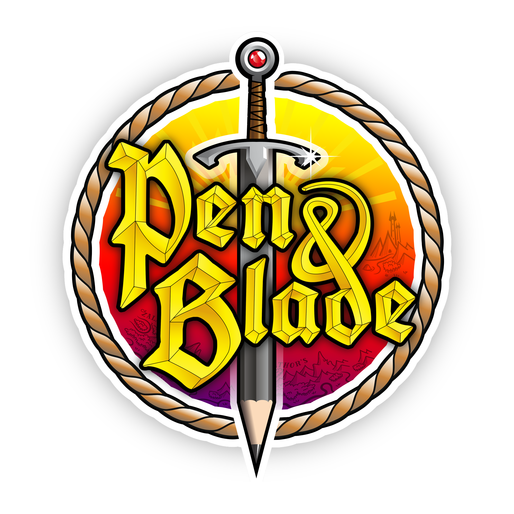

philipp_schlesinger
coding with

Visit the P&B podcast

FlappyBird AI project
about me
My name is Philipp, I am a software developer currently located in Berlin, Germany.
Software development is my passion, even if I am not at work.
At my job, I am mostly working with Android and Ruby on Rails.
In my freetime, I experiment with technologies such as AI, physics calculations and hardware encryption.
When I am not developing (which is rarely the case), I like to hike, skate, read or play video games.
In 2019, I came in touch with a Dungeons and Dragons YouTube channel. Since then, we work together on content.
In 2020, we started the Pen & Blade podcast, where we just casually talk about stuff we have an interest in.